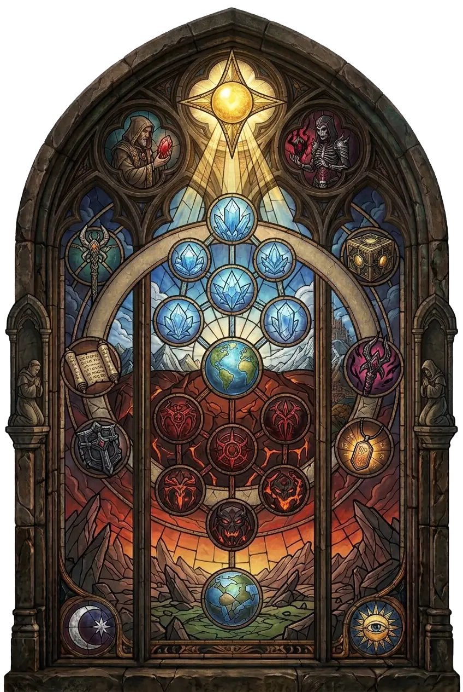

Eine Narbe im Zentrum der Wirklichkeit – einst Sitz des Weltensteins und wichtigstes Schlachtfeld des Ewigen Konflikts, bis heute gezeichnet von dessen Kriegen.
Seine Wirklichkeit ist verzerrt und instabil, seine Landschaft verändert sich fortwährend – und seine zentrale Lage macht Pandämonium zu einem Schnittpunkt zwischen den Ebenen der Schöpfung.
Überliefert · nach Diablo Wiki (Fandom)
Pandämonium liegt im Zentrum der bekannten Wirklichkeit. Es gilt als eine Art Narbe, die bei der gewaltsamen Entstehung des Universums zurückblieb, als Anu und Tathamet in ihrem letzten Kampf aufeinandertrafen.
Das Reich folgt nicht denselben Gesetzen wie Sanktuario. Seine Wirklichkeit ist verzerrt und instabil, seine Landschaft verändert sich fortwährend, und seine zentrale Lage macht Pandämonium zu einem Schnittpunkt zwischen verschiedenen Ebenen der Schöpfung.
Vor allem aber wurde es über unzählige Zeitalter hinweg zum wichtigsten Schlachtfeld des Ewigen Konflikts.
Pandämonium entstand im Zusammenhang mit dem gewaltsamen Tod Anus und Tathamets. Im Gegensatz zu den klar voneinander getrennten Reichen der Hohen Himmel und der Brennenden Höllen besitzt Pandämonium eine wesentlich instabilere Natur.
Die Wirklichkeit selbst scheint dort verformt zu sein. Das Reich bildet einen Knotenpunkt zwischen verschiedenen Bereichen der Schöpfung. Insbesondere sein Zentrum verbindet die Hohen Himmel und die Brennenden Höllen miteinander.
Zugleich ist Pandämonium von gewaltigen ursprünglichen Energien durchzogen. In der Nähe seines Zentrums entsteht fortwährend neues Land, während an seinen äußeren Rändern Teile des Reiches abbrechen und verschwinden. Dadurch befindet sich Pandämonium in einem ständigen Kreislauf aus Entstehung und Zerstörung.
Pandämonium ist ein riesiges, chaotisches und lebensfeindliches Reich. Es existieren dort einheimische Wesen und Völker, doch diese sind weder menschlich noch lassen sich ihre Lebensweisen ohne Weiteres mit denen Sanktuarios vergleichen.
Für Menschen bleibt Pandämonium deshalb nur schwer begreifbar. Wer dort bestehen will, muss sich an eine Welt anpassen, deren Landschaft, Regeln und Gefahren sich deutlich von allem unterscheiden, was aus der sterblichen Welt bekannt ist.
Im Herzen Pandämoniums befand sich einst der Weltenstein. Seine gewaltige Macht machte das Reich zu einem der wichtigsten Schauplätze des Ewigen Konflikts. Engel und Dämonen kämpften immer wieder um die Kontrolle über das Artefakt und damit auch über Pandämonium selbst.
Im Laufe dieses Krieges wechselte das Reich mehrfach zwischen den Mächten der Hohen Himmel und der Brennenden Höllen. Da seine Wirklichkeit besonders empfänglich für äußere Einflüsse ist, hinterließen beide Seiten dabei sichtbare Spuren.
Pandämonium trägt deshalb bis heute Merkmale sowohl des Himmels als auch der Hölle in sich.
Als Inarius und Lilith den Weltenstein entwendeten und mit seiner Macht Sanktuario erschufen, verlor Pandämonium einen großen Teil seiner bisherigen Bedeutung. Der Ewige Konflikt verlagerte sich zunehmend, und die Aufmerksamkeit von Himmel und Hölle richtete sich schließlich auf die neu entstandene sterbliche Welt.
Doch der Krieg hinterließ Pandämonium keineswegs unberührt. Überall im Reich finden sich die Überreste alter Schlachten. Zerstörte Kriegsmaschinen liegen in der Landschaft verstreut. Die Körper gefallener Dämonen sind teilweise so alt, dass sie im Laufe der Zeit versteinerten.
Auch verlassene Festungen zeugen von den einstigen Kämpfen. Einige wurden ursprünglich von Engeln errichtet, um dämonische Angriffe abzuwehren. Andere Bereiche enthalten noch immer Fallen, in denen Dämonen seit vergangenen Schlachten gefangen sind. Manche Bewohner Pandämoniums haben inzwischen die verlassenen Garnisonen übernommen, die einst von den himmlischen Heerscharen genutzt wurden.
Nicht alle Dämonen kehrten nach dem Ende großer Schlachten in die Brennenden Höllen zurück. Einige blieben in Pandämonium.
Sie hatten sich derart an Gewalt und Krieg gewöhnt, dass sie das ehemalige Schlachtfeld nicht mehr verlassen wollten. Damit wurde Pandämonium nicht nur zu einer Ruine des Ewigen Konflikts, sondern zugleich zu einem Ort, an dem dessen Folgen noch lange nach dem Ende einzelner Feldzüge fortbestanden.
Während der Ereignisse um das Ende der Tage nahm Malthael die Festung des Pandämoniums für sich in Anspruch. Von dort aus verfolgte der ehemalige Erzengel der Weisheit seine Pläne.
Um ihn zu erreichen, musste der Nephalem Pandämonium durchqueren und schließlich in die Festung eindringen. Dort kam es zum Kampf mit Malthael, der schließlich besiegt wurde.
Damit wurde Pandämonium erneut zum Schauplatz eines Ereignisses, das unmittelbare Auswirkungen auf das Schicksal Sanktuarios hatte.
Um das Jahr 1338 versuchte die Gruppierung der Úllo Sar, eine dauerhafte Verbindung zwischen Sanktuario und Pandämonium herzustellen. Dazu nutzten sie sowohl eigene Rituale als auch sogenannte Realmwalker.
Ihre Versuche führten zur Entstehung von Pandämonium-Rissen, durch die sich die Grenze zwischen beiden Reichen öffnete. Infolge dieser Vorgänge begannen sogar Tote aus Pandämonium nach Sanktuario zurückzukehren.
Nach seiner eigenen Rückkehr in die sterbliche Welt beschrieb Deckard Cain eine Prozession von Seelen, die sich durch eine zerrissene Landschaft bewegte, über der sich ein gewaltiger Riss aus Licht befand.
Pandämonium ist mehr als ein ehemaliges Schlachtfeld. Seine Lage im Zentrum der Wirklichkeit, seine instabile Natur und seine Verbindung zu den verschiedenen Ebenen der Schöpfung machen es zu einem einzigartigen Ort.
Hier befand sich einst der Weltenstein. Hier führten Engel und Dämonen einen großen Teil ihres endlosen Krieges. Und selbst nachdem sich der Schwerpunkt des Ewigen Konflikts nach Sanktuario verlagerte, blieb Pandämonium von dessen Folgen geprägt.
Ruinen, gefallene Krieger und zurückgelassene Waffen erinnern noch immer an die Zeitalter, in denen dieses Reich im Zentrum des Krieges zwischen Himmel und Hölle stand.